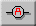

To measure the current in the resistor, you need to insert an ammeter into the circuit. Do this by selecting the Ammeter Tool (circuit symbol:  ). Then click on any wire segment in the circuit. This will replace this element by an ammeter. (If you click on the reistor or battery, then these elements will be replaced with an ammeter; but we don't want this to happen here!)
When you have done this correctly, the ammeter will display a current of 1.2 A.
You can get more information about the ammeter by clicking on the Select Tool and then on the ammeter. E.g., the display below the circuit area will show the internal resistance of the ammeter, which can be adjusted. You may want to change it and observe how this affects the current by clicking the Calculator icon.